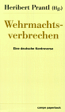
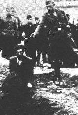

|
|
Vernichtungskrieg
Verbrechen der Wehrmacht 1941 bis 1944
Hamburger Institut für Sozialforschung
 Heribert Prantl
Wehrmachtsverbrechen. Eine deutsche Kontroverse. |
Am Abgrund der Erinnerung
Nach vier Jahren trennt sich das Hamburger Institut für Sozialforschung jetzt von der Wehrmachtausstellung. Im Gespräch mit der ZEIT ziehen die Veranstalter Hannes Heer, Walter Manoschek und Jan Philipp Reemtsma eine Bilanz
|
Dezember 1999 in New York City
Die Amerikareise der Ausstellung wird unterstuetzt von der Copper Union, der New York University. Mehr Informationen sobald wir mehr wissen... |

Die Wehrmacht, so der Tenor der
Ausstellung des Hamburger Instituts für
Sozialforschung, war an den Kriegsverbrechen aktiv
beteiligt – dennoch soll nun kein Pauschalurteil
über eine Generation gefällt, sondern eine
Debatte eröffnet werden.
Die Veranstaltungen des Begleitprogramms bieten Raum für eine - sicherlich kontroverse - Debatte.
Hier sollen vor allem Brücken geschlagen werden im Dialog zwischen Befürwortern und Gegener der
Austellung, zwischen Wissenschaftlern und Zeitzeugen und zwischen den Generationen.
Die Väter als Täter
„Verbrechen der Wehrmacht“: Eine Bilanz der
Ausstellung nach vier Jahren Reise durch die
Republik
Süddeutsche Zeitung vom 2. Februar 1999 |
|